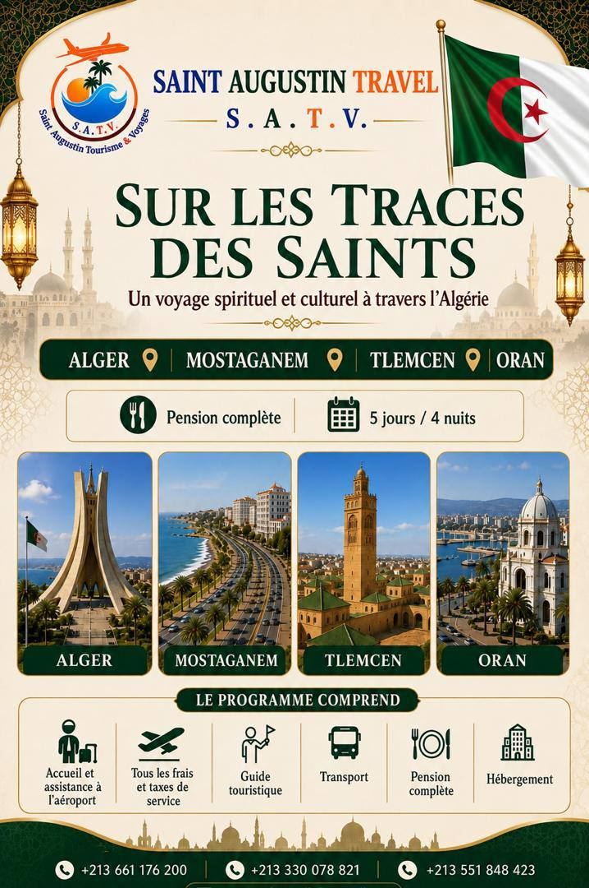
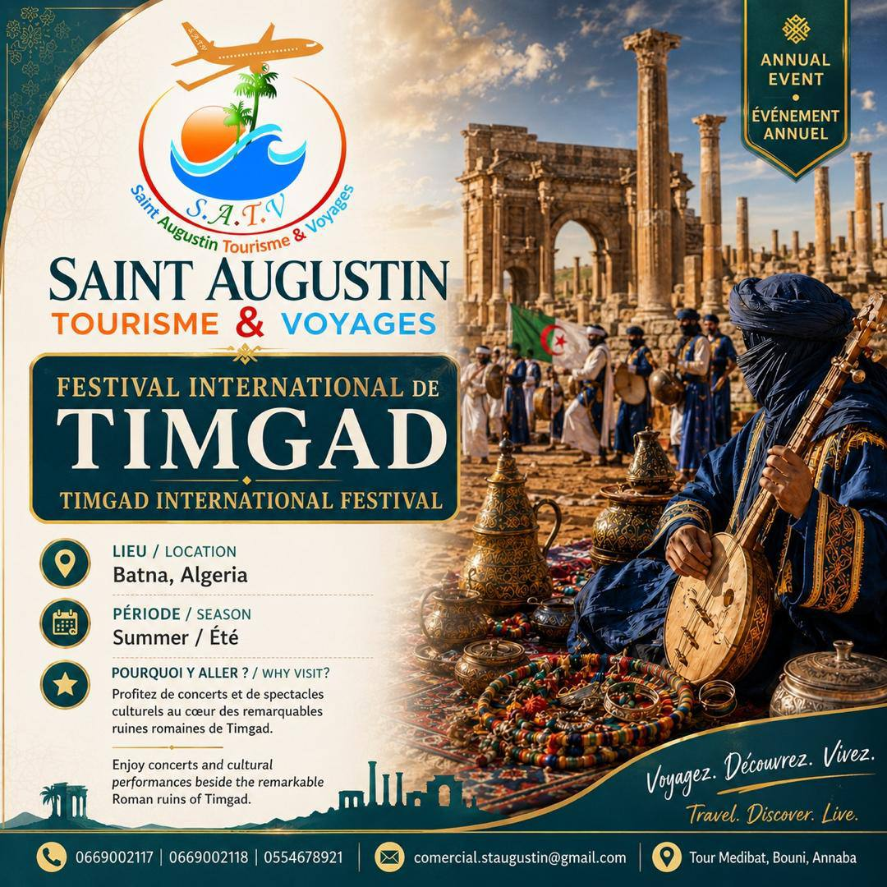
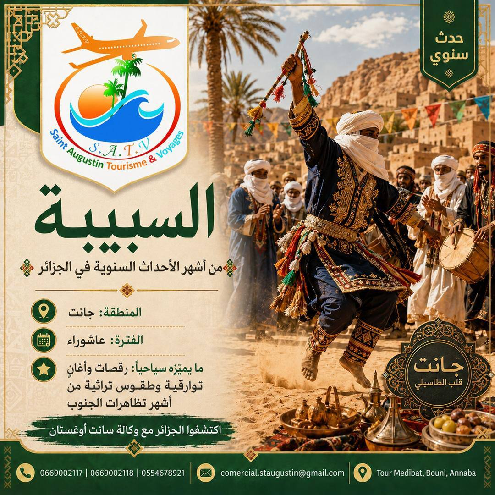

Langue
Accueil
Actualités
Nouveaux circuits, festivals et événements culturels : toute l'actualité S.A.T.V. au même endroit.
Nouveaux circuits, festivals et événements culturels : toute l'actualité S.A.T.V. au même endroit.
Nouveaux circuits, événements culturels et festivals à ne pas manquer partout en Algérie.

Nouveau circuitNotre nouveau circuit spirituel de 5 jours à travers quatre villes emblématiques d'Algérie est désormais disponible à la réservation.
Voir le circuit →
Événement annuelConcerts et spectacles au cœur des ruines romaines de Timgad : nous préparons nos excursions pour l'édition de cet été.
Lire l'article →
TraditionDanses, chants et rituels touaregs : zoom sur l'un des événements les plus attendus du grand sud algérien.
Lire l'article →